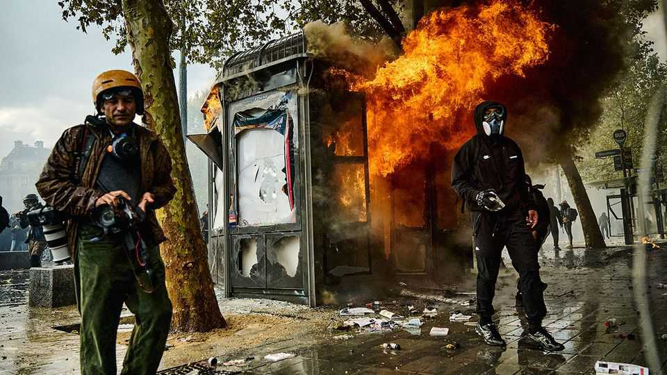

France’s devastation and its aftermath
The violence will benefit the extremes

Oct 22nd 2026
In Limoges the clock tower and roof of the 19th-century town hall collapsed after it was set alight. In Marseille casseurs, or hooligans, broke into the town hall. In Bordeaux hooded looters smashed the glass windows at Louis Vuitton and nearby shops, grabbing handbags, trainers and other stash. Pyres of electric scooters burned on street corners. Plumes of black smoke billowed in the air. Across the country over 2,000 people were arrested. “This evening we are all feeling anger, and shame,” declared President Emmanuel Macron in a televised address, before jetting off for a trip to the Gulf.
France is no stranger to upheaval. But even in a country hardened to street revolts, the events of October 17th were shocking. What set off this outburst of destruction? Mr Macron faced months of violent demonstrations by gilets jaunes (yellow jackets) in 2018-19. Yet the combination of devastation on the streets and powerlessness by the authorities was worse. It encapsulated a paralysis at the heart of government, a collapse in confidence in centrist politics, and lays the ground for greater division: voters at next spring’s presidential election could face a choice between the populist-right Marine Le Pen and the populist-left Jean-Luc Mélenchon.
The chaos was the result of a combustible mix on the streets—and an inadequate police presence. Laurent Nuñez, the interior minister, conceded that the police had “lost control”, and a parliamentary inquiry has been opened. Those on the streets fell into three groups. The first were the half-million students, teachers and unionists who protested peacefully against underinvestment in education and the cost of living. “The casseurs are discrediting our movement,” complained Pauline, a 20-year-old university student, who said she was demonstrating against “everything”, from overcrowded lecture halls and high petrol prices to police repression. The unpopular president was also on her list. “Macron, t’es mort” (Macron, you’re dead) read graffiti near a smashed-up bus shelter, next to “ACAB”, or “all cops are bastards”.
A second group, the casseurs, have a history of infiltrating demos. Dressed in black and full-hooded, often wearing ski goggles and face masks, they looked to pick a fight. In France there are 600-800 members of such ultra-left groups, often anti-capitalist anarchists, said a parliamentary report in 2023. They are agile, covert and deft at evading the police. Of 48 “black blocs” (a group of casseurs) arrested after protests in 2023, 85% were men and 75% aged under 33. Most are well educated and not poor, noted the report. They seek “to create trouble in order to overturn the system”, said Mr Nuñez, then head of the Paris police.
The third group were opportunistic looters. Messages shared on TikTok guided youngsters to smashed-up shopfronts. In Bordeaux one young man casually swung stolen goods inside a shopping basket; others ripped looted Nike trainers from their boxes and ran. Within hours stolen goods were put on sale online—“jumper stolen during the demos” read one description—before the websites took them down. Some 3,000 shops and businesses were looted or vandalised.
Intelligence services had forecast a turnout of 200,000; the number was over twice that. Some 60,000 police officers were deployed, about a third less than during the worst days of the gilets jaunes protests. During earlier protests police were accused of brutality. This time shopkeepers were enraged that they were left to fend for themselves. Calm returned after Sébastien Lecornu, the prime minister, authorised partial curfews in Bordeaux, Paris, Marseille and other cities. Soldiers will help keep guard for the next protests, planned for October 24th.
The underlying tension is linked to the election, which is polarising politics. After nearly a decade in office, the centrist Mr Macron is constitutionally barred from running again. Many protesting students have no memory of life under a different leader. France wants change, but is deeply divided about what should come next.
Supporters of Mr Mélenchon, who joined the demo in Paris, saw the protests as a show of strength for their champion. Beforehand 69% of the French told a poll they backed the protesters, rising to 92% among his supporters. Backing for his Unsubmissive France (LFI) party is strong among the young and in the ethnically diverse banlieues, or suburbs, where schools are in the worst shape. A poll taken after the riots showed his base had held strong. Mr Lecornu, who blames the LFI for “exploiting” the protests, warned that the extreme left is using the violence as a “warm-up round” for the election. Mr Mélenchon blames the government for the disorder.
The real beneficiary, though, is Ms Le Pen. She got a small bump in the polls, which now give her 34-38% in the first round of the presidential election; Mr Mélenchon is on 15-20%. On October 18th she gave a presidential-style address, blaming the violence on “politicised casseurs” and “criminals from the banlieue”. Ms Le Pen regards the protests as evidence that Mr Mélenchon is unfit for office and that Mr Macron cannot control the country. One poll finds she would win a run-off against Mr Mélenchon by 68% to 32%.
Debate is shifting to law and order, which plays into her hands. Donald Trump claimed that France is being “burnt to the ground” by migrants. But nearly all of the demonstrators are French, with white people as well represented as any other ethnicity. A government minister hinted at a racial element, but just among looters, blaming “a criminal fraction from the banlieue”.
This is fertile ground for foreign interference too. NewsGuard, an American disinformation monitor, found that 14 fake reports, often pointing the finger at migrants, were linked to a Russian influence operation. An AI-generated image of the Palestinian flag atop the Eiffel Tower was viewed 3.7m times. Mr Macron said there was indeed “foreign manipulation”, not of the events themselves, but about the narrative of what happened.
The violence risks distracting France from the public debate it needs: about what sort of welfare system it can afford and how to generate the wealth required to sustain it. The public finances are in a dire state and the bond markets are jittery. Yet the centre is split, and lacks a compelling candidate. And the leading politicians vow to lower the retirement age, thus depriving themselves of future savings on the single biggest item of public spending.
Part of France understands this. The silent constituency was out again in the terrace cafés the day after the riots; a waiter in Bordeaux called the violence “scandalous”. But radicals are masterful at drowning out such voices. Unless the centre can find a persuasive way to tell a responsible story, about the need for order in the public finances and on the streets, voters will end up with no choice but the extremes. ■